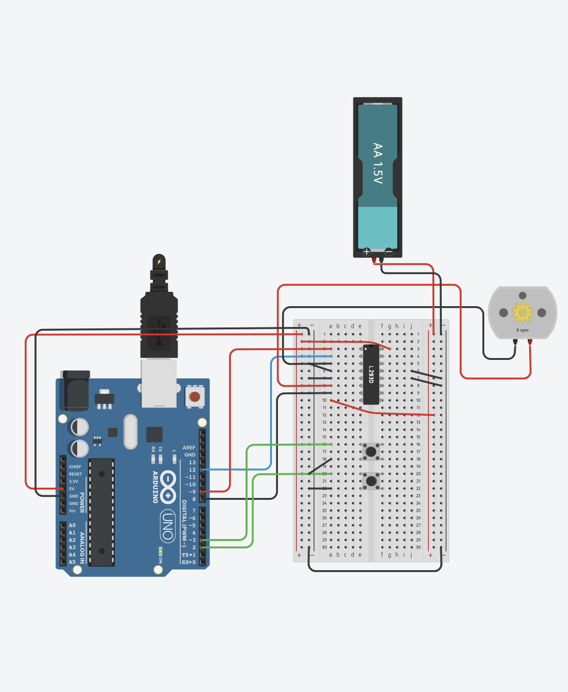
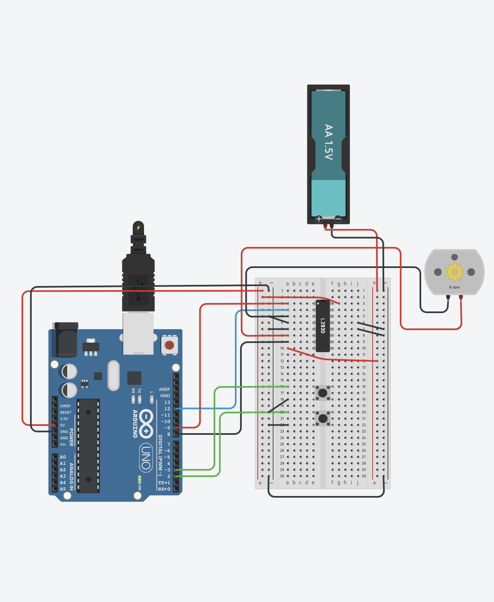

People are often unaware of the invisible lurking particles that are flung into the air with every flush of the toilet. (Watch this video!) These particles often contain fecal pathogens and health hazards that quickly spread in a restroom.
To address this overlooked issue, I have ideated, designed, simulated, and prototyped a device that will be able to automatically close its lid and flush the toilet after a person stands up. This will significantly dampen the “toilet plume” and stop the spread of harmful germs and bacteria.
One primary goal of this project was to ensure the device’s affordability. This will allow SmartFlush to be implemented in all homes, regardless of socioeconomic status, and even in public restrooms.

 
